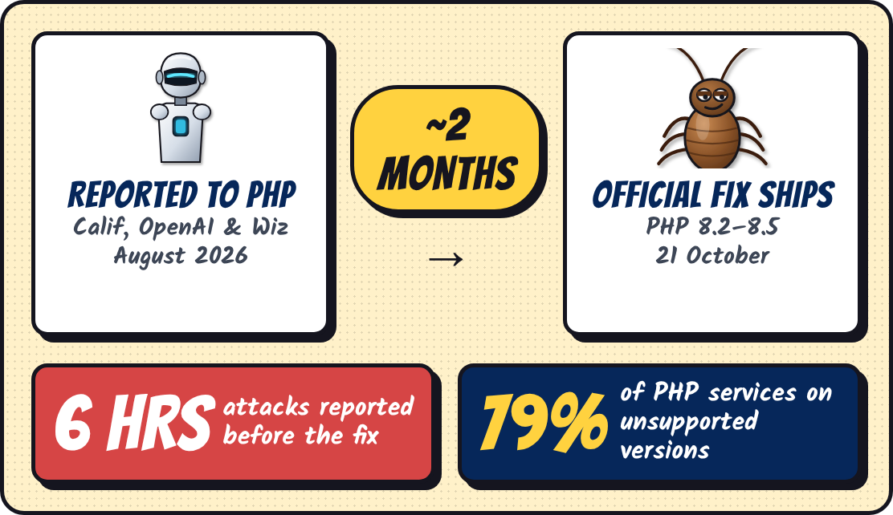
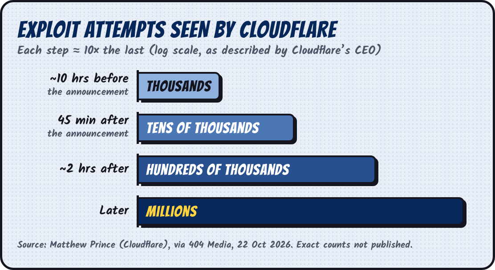
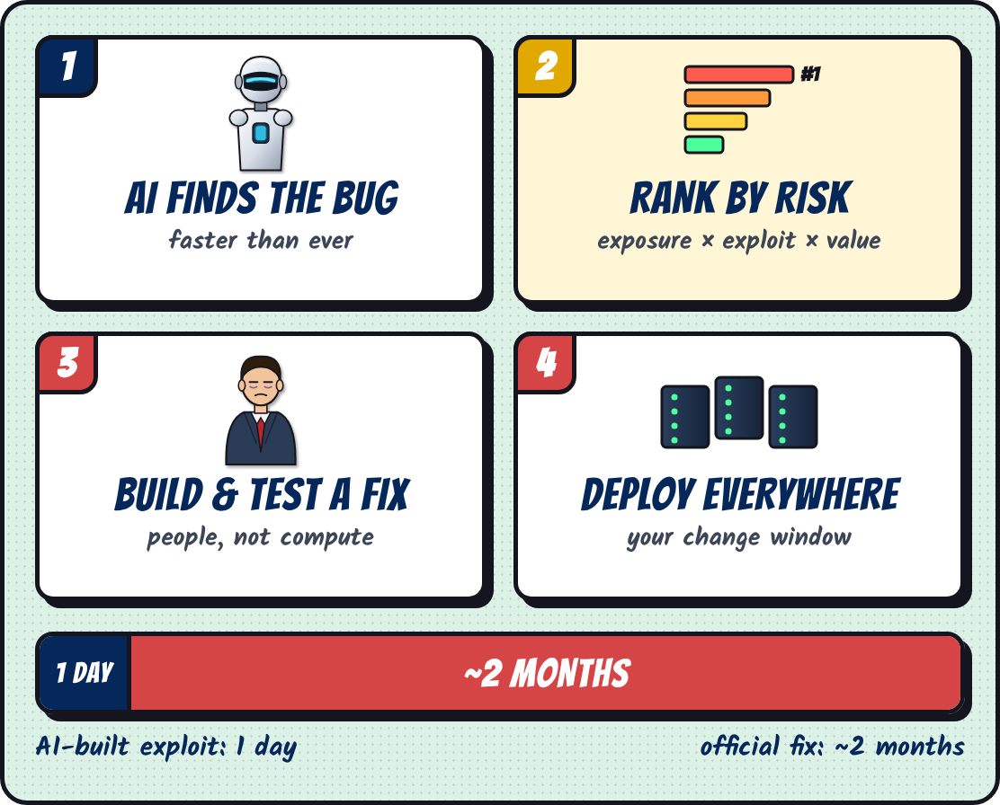
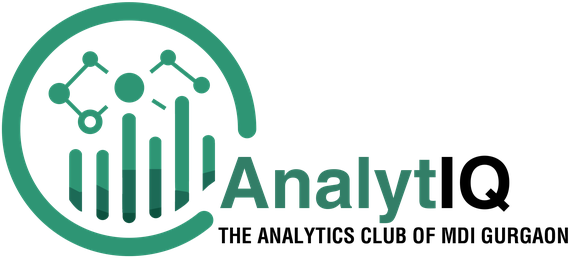

| | Edition #09 | 01 Nov 2026
Newsletter by AnalytIQ |
|
| AI FOUND A 14-YR BUG · GOVT SITES WENT DARK |
|
| Tap the comic to read it full size. |
|
AI found a 14-year-old bug. Then governments pulled the plug. |
| | ⚡ TL;DR
AI helped researchers find PHP2Shell: two critical flaws that hid for about 14 years in PHP, the language behind about 7 in 10 websites. The fix took about two months. When details leaked, attacks started within hours, and governments from Australia to the Netherlands pulled websites offline. |
|
| | 🧭 WHY IT MATTERS
AI made finding flaws cheap. Fixing them still runs on people, approvals and release windows. The organisations that coped had two things ready: an up-to-date list of what they run, and someone with the authority to pull the plug. Does yours? |
|
🖥️
22.6M
systems possibly exposed | | 🧪
100s
public exploit codes | | 📈
Millions
of attack attempts |
|
| 🔎 01 · THE LEAD STORY PHP2Shell is two memory-handling bugs deep inside the PHP engine (CVE-2026-109618 and -109619, both rated 9.2 out of 10). Chained, they let an attacker run code on a web server without logging in, shown against WordPress, Drupal and Joomla. Think of a flaw in the lock design every house on the street shares. AI did the heavy lifting. Calif and OpenAI reported the root cause on 11 Aug; Wiz Research found the flaws with AI tools and reported them on 24 Aug. Trail of Bits says one engineer built a working exploit in a day with OpenAI’s Codex, and Chainguard says it found the same bugs independently with an AI model. |
|
 |
| ⚠️ 02 · THE CATCH PHP’s security team took about two months to ship a fix. Then the secret slipped: the CVE numbers leaked on 20 Oct, an exploit video was posted by mistake, and Chainguard shipped patched images six hours early. Exploitation reports came in about six hours before the official fix. On 21 Oct, the panic went public. Australia’s cyber security agency site went offline. The Netherlands lost its government login, parliament and Port of Rotterdam sites; Finland, France, Denmark and Germany pulled services; UK councils and the Met Police site went dark. The UK’s NCSC told anyone who couldn’t patch fast to consider taking systems offline. And about 79% of PHP services with a visible version run releases that won’t get the fix. Who in your company can take the website down at 2 a.m.? |
|
🤯 WAIT, WHAT? · 5 PLOT TWISTS| 🕵️ | Four teams, one bug. Calif, OpenAI and Wiz each found it with AI help, and Chainguard says it found the same bugs on its own. | | ⚡ | One day to weaponise. Trail of Bits says an engineer built a working exploit in a single day using OpenAI’s Codex. | | 🍯 | Attackers were early. Amazon’s honeypot servers logged an exploit attempt on 17 Oct, four days before the fix. | | 🎬 | The oops video. A research team accidentally posted a clip of its exploit the night before release. Deleted, but copies spread. | | 🙃 | Physician, heal thyself. Australia’s national cyber security website was among the sites knocked offline. |
|
|
| 📊 03 · THE DATA BEHIND IT  Attack traffic grew roughly tenfold at each step. Defenders faced a ranking problem: Palo Alto Networks’ Unit 42 counted 22.6 million internet-facing systems that might be vulnerable. Nobody patches 22.6 million at once, so you rank by exposure, how easy the flaw is to exploit, and what the system is worth to the business. You can’t rank what you can’t see: without an up-to-date list of their systems, firms were guessing. AI helps defenders too. When OpenAI’s test agents broke out of a sandbox and into Hugging Face in July, Hugging Face’s own AI agents, scanning its security logs, helped flag it. Attackers scale with compute. Defenders scale with data. |
| 🧩 04 · THE MECHANISM  Discovery scales with compute. Repair scales with people. Ranking decides what gets fixed first. |
🧮 05 · THE REAL LESSON🤖
1,000 AI finds | + | 🙈
No ranking | = | 📢
Noise |
Rank by risk, then patch. Prioritisation wins. |
🔥 OVERHYPED THIS MONTH
“Black October: AI is hacking the internet”Big disclosures landed between 19 and 22 Oct: PHP, GitLab, Node.js, a broken certificate authority and a poisoned LiteLLM release. AI found several of them. But most of these flaws were years old. One analysis calls it a disclosure wave, not an attack wave: the bills arrived this month, the debt built up over a decade. Where do you land? One tap opens a pre-written reply. Just hit send. |
|
| Know who owns your company’s website? They should read this. |
|
SOURCES
• Socket, “PHP Foundation Says Chainguard Broke Security Embargo Ahead of Emergency Patches” (Oct 2026)
• Recorded Future, “PHP2Shell Exploitation: Two Critical PHP Flaws Explained” (Oct 2026)
• 404 Media, “AI Is Changing Everything About Hacking” (22 Oct 2026)
• Insurance Business UK, “UK councils and Met Police among sites pulled offline after NCSC alert” (Oct 2026)
• Canberra Times, “Government cybersecurity website hit in global flaw” (22 Oct 2026)
• BankInfoSecurity, “Millions of Exploit Attempts Logged Against PHP Servers” (Oct 2026)
• Forkast via Yahoo Tech, “Black October Is a Disclosure Wave. The Label Hides the Clock.” (23 Oct 2026)
• InfoWorld, “PHP2Shell exposes the weakness in coordinated vulnerability disclosure” (Oct 2026)
• iTWire, “PHP2Shell: the 14-year-old bugs…” (Oct 2026)
• OpenAI, “OpenAI and Hugging Face partner to address security incident” (21 Jul 2026, updated) |

TEAM ANALYTIQ, MDI GURGAON
LinkedIn | Instagram |